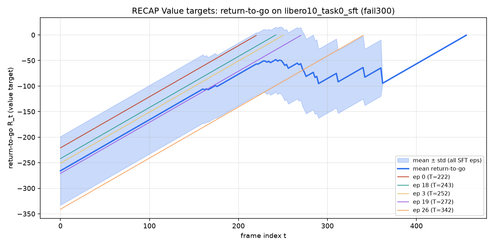
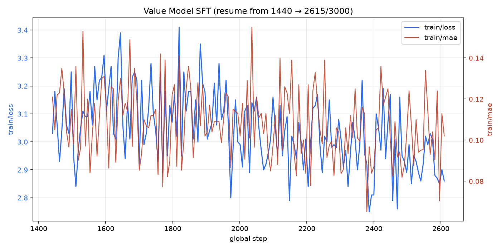

Source: returns_fail300.parquet + Value SFT log · Step2 尚未结束，Advantage 需等 Step3。
returns_fail300.parquet
SFT 子集 30 episodes / 8005 frames；粗线为按帧均值±std，细线为 5 条代表轨迹。

续训区间 step 1441→2615（目标 3000）；最新 loss=3.01, mae=0.109。
